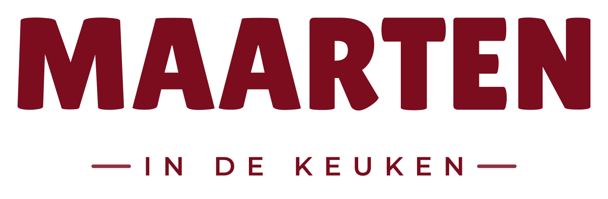

02 · Logo-systeem
Vier vormen, één merk
Alle logo's zijn opgebouwd uit Lilita One, als vector uitgesneden. Gebruik altijd de aangeleverde bestanden (SVG voor drukwerk en schaalbaar gebruik, 4K-PNG voor social en video), nooit zelf nagezet.



| Regel | Waarom |
|---|---|
| Vrije ruimte | Houd rondom het logo minimaal de hoogte van de letter M vrij van andere elementen. |
| Kleuren | Alleen bordeaux op crème, of crème op donker/bordeaux/foto. Nooit twee kleuren in één logo, nooit andere kleuren. |
| Op foto's | Alleen de crème-versie, en alleen op rustige, donkere delen van het beeld. |
| Niet doen | Niet roteren, uitrekken, van schaduw of contour voorzien, of opnieuw zetten in een ander font. |